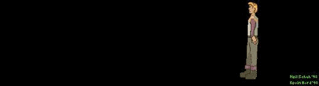

Colin McEvoy (webmaster of the Ulence Flats website) comments: "... Boy is it right. The man shooting Roger Wilco represents CUC. CUC is the company that owns Sierra (at that time -ed) and they are responsible for canceling Space Quest 7. They didn't think enough people want it to be made, that's why we have to prove otherwise and show that we want Space Quest! This cartoon is excellent, not because of Roger Wilco bleeding dead at the feet of CUC, but because this is exactly how it is. It's really like that, CUC stopping Space Quests 7 and killing Roger Wilco."